こいつはみす51代アドカレ4日目の記事だぞっ。 #香風智乃生誕祭2018
1. 対小田原戦線とは
ーー全ては、このツイートから始まった。
起きたら小田原にいて終電をなくしてしまった
— ジョニー度19% (@sirokome19) November 14, 2018
本記事は、本人による証言や対小田原戦線指揮所（当時立てられたDiscordの部屋名、現在は看守室に再改名）に残された文献をもとに、ひょんなことから深夜1時に小田原駅に降り立ってしまった青年のその後を追ったノンフィクションである。
2. あの日、なにがあったのか
2.1 23:42 新宿駅
同人誌・ボカロ企画合同打ち上げも無事に終わり、彼は小田急線の終点である「小田原」行きの最終電車に乗り込んだ。
ところで、彼は「小田原」よりもはるかに新宿寄りの「町田」の人間であるため、1時間後の電車でも帰宅することができた。そして、その電車であれば寝過ごしたとしても徒歩で帰宅することは容易なのだ。事実、彼はそのような経験を何度かしている。でもこの電車は違う。寝過ごしたら最後、自宅からはるか西へと飛ばされてしまう。つまり、寝過ごし厳禁ってわけなのだ。
彼はそのことを肝に命じながら、軽く目をつぶった。
2.2 01:07 ???駅
聞こえてくるのは「終点」のアナウンス。聞き間違いか、もしくは夢だろう。そう信じてゆっくりと目を開けた。ちょうど電車がホームへ滑り込んでいく。
「ここは……、見たことがないーー。」
おしまった
— ジョニー度19% (@sirokome19) November 14, 2018
そう、彼は寝過ごしてしまったのである。
やってしまったものはしょうがない。彼は祈るように上り電車の時刻を調べた。だが、不幸にも時刻は深夜1時過ぎ。もう町田に帰れる電車は1本もなかったのだ。
2.3 01:23 小田原駅
実は小田急線の寝過ごし事案は多く、終点の小田原駅には朝5時まで営業しているカラオケやら24時間営業のネットカフェがいくつか存在する。不幸にも寝過ごしてしまった人々は、まるで掃除機に吸われるゴミのように各店舗に吸い込まれていく。私は、当然彼もそのような選択肢を取るのだろうと思っていた。しかし、すぐに彼がそこらへんのゴミではない、ということを思い出させてくれた。
電車代ちょっとでもケチりたくて家までの徒歩ルート見たら10時間とか言われて草
— ジョニー度19% (@sirokome19) November 14, 2018
彼は、一夜を明かす場所を探すのではなく、「徒歩」で帰宅しようとしていたのだ。
俺は歩くぞ
— ジョニー度19% (@sirokome19) November 14, 2018
そして、その瞬間「深夜の神奈川縦断フルマラソン」の号砲が鳴り響いた。
2.4 01:37 小田原市内
ここで、深夜フルマラソンを実施していた彼に助っ人が現れることとなる。
暇すぎるしだれか付き合ってくれ
— ジョニー度19% (@sirokome19) November 14, 2018
このツイートをきっかけに彼はDiscordに接続をし、そこで出会ったRyo Senoという優秀なナビゲーターとともに二人三脚で「町田」を目指すこととなった。
……のだが、早速思いがけない事実が判明した。
「なんか古墳みたいなとこにいるんだけど」
「は？」
どういうわけか、彼は「町田」とは逆方向の「謎の古墳」を目指して歩いていたらしいのだ。
ここでRyoが活躍する。彼の居場所を逐一報告してもらい、町田への正しいルートを、府中の司令室からグーグルマップを見つつ伝達するという任務を担当したのである。
その甲斐あり、彼は無事に正しいルートへと軌道を修正した。
2.5 02:45 小田原市内
あれからどれくらい時間が経っただろうか。グーグルマップ通りに歩を進め、大通りから一本逸れた細い道に突如現れた巨大なJRの車庫を右手に見ながら歩いていた彼は、一つの大きな決断を迫られていた。
これまでずっと頼りにしていたグーグルマップが、この先は「山越えルート」を進め、と指示しているのだ。その山の標高は200m近くあり、当然街灯すらないガチの山だ。当初は「行けるっしょ」と楽観的であった彼であったが、徐々にヤバさを増す雄大な山並みに、さすがの彼も恐怖を感じずにはいられなかったのである。
「余裕だと思っていたら、想像していたより山だった」
彼はそう言い、グーグルマップの指示する、最短「山越えルート」を諦め、もう一つの候補であった、遠回り「海沿いルート」を選択することにした。
2.6 04:30 東海道線 国府津駅付近
「海沿いルート」を選択した彼に誘惑が襲う。
実は、海沿いルートを選択したことにより、「東海道線」を使う案が浮上した。しかも、もう始発が動き出す時間帯である。ここから東海道線に乗り込み、1回だけ乗り換えればもうそこは「町田」だ。もう10km以上歩いていた彼にとっては、降って湧いた希望の選択肢なのだ。
しかし……
「たけえな。」
そう、高いのである。JRから小田急に乗り換える必要があるため、バカみたいに運賃が高いのである。なんなら小田原駅から町田駅に向かった方が断然安いのである。これでは歩いた意味があるどころか高い金を払うために歩いたようなものだ。
国府津駅をやり過ごし、彼は国道1号線を東進する。
2.7 05:00 小田原市内
「僕のゴールはどこなんですか」
歩くこと15km、未だ小田原市内を脱出できていない。気温は6℃、深夜フルマラソンは地獄の様相を呈してきた。
このまま国道1号線を東進したとしても、あるのは東海道線の駅のみ。どこかのタイミングで北上し、小田急線を目指す必要がある。私は、一つの提案をした。
真北にある「小田急線 秦野駅」まで歩き、そこから電車に乗る、というものだ。
当初の目標である「町田まで徒歩」は諦めることとなるが、運賃は浮くことになるため「歩いた意味」はあることになる。
彼はその提案を受け入れ、国道1号線に別れを告げ、北上を始めた。
2.8 06:18 中井町内
やっとの思いで小田原市を脱し、秦野駅を目指して北上を続けていた彼を、ついに陽の光が照らし始めた。そして、陽の光は彼以外にも「あるもの」を照らしていた。
バス停……
ここまで20km歩き、携帯の充電も尽きかけていた彼にとって、それはまるで神からの贈り物なのだ。
残り徒歩１時間で秦野駅につくところだったんですがあまりにも辛かったうえ、携帯の充電も限界なのでバスを使います...
— ジョニー度19% (@sirokome19) November 14, 2018
こうして、彼は秦野駅へのバスに乗車した。
無事に帰れることが確定し、さまざまな不安感から解放された彼は急に寒さを感じはじめ、バス車内で震えが止まらなかったらしい。
2.9 07:57 帰還
おうちにかえってきました
— ジョニー度19% (@sirokome19) November 14, 2018
こうして、深夜のフルマラソンは幕を閉じた。
ちなみに、後日聞いた話によると、バスに乗ってしまったこともあり、この20kmの徒歩によっておそらく10円程度しか運賃が安くならなかった、とのことらしい。
3. 事後調査
さて、ここからは考察編である。まずは彼が歩いたルートを簡単に確認しよう。
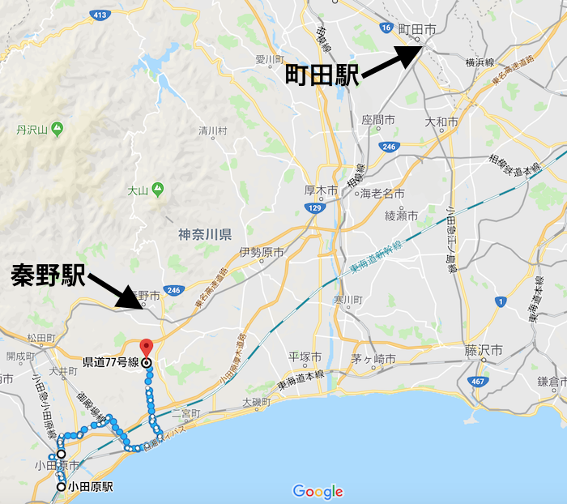青線が彼が歩いたルートである。どのバス停から乗車したかが曖昧なため一部は推測となってしまうが、距離にして20kmを超えていたことは間違いない。
次に、彼が歩いた範囲をもう少し細かく見ていこう。
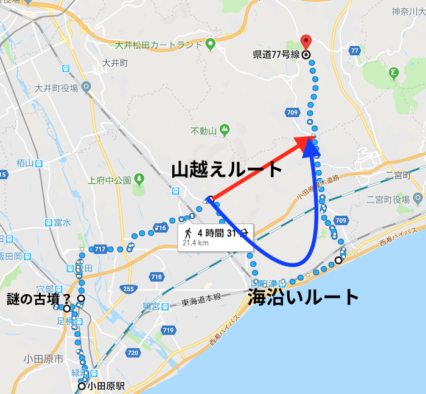歩いたルートはまるで数字の２のようであり、明らかに遠回りに見える。ただ、これには理由があり、先ほど述べた通り、途中まではグーグルマップ通りの山越えルートで進んでいたものの、雄大な山並みを前に「死」がよぎり、海沿いルートに急遽変更してしまったからなのだ。なので、地図上ではこのような大規模な迂回となってしまっている。
というわけで事後調査テーマは、
「結局山越えルートは行けたのか？」だ。
3.1 現地へ
小田原へは、しまりんになりながら運転することおよそ40分。まず向かったのは、山越えルートと海沿いルートの分岐点となる場所、地図上では以下の場所である。
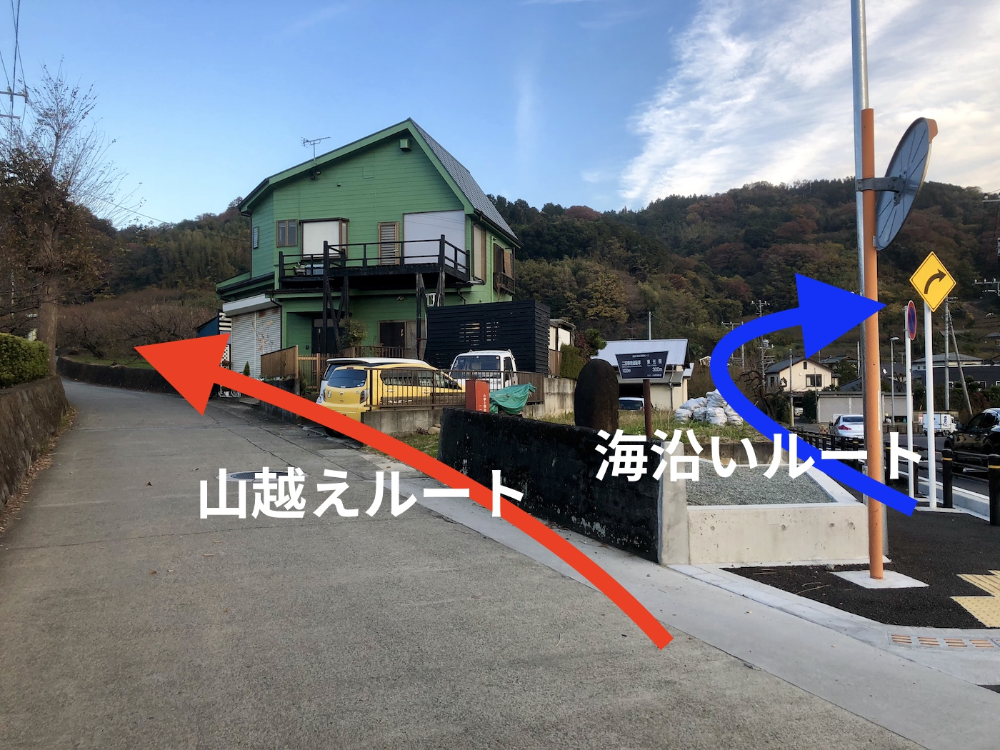 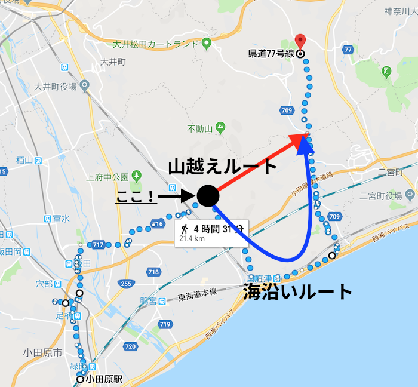見てお分かりの通り、確かに雄大な山並みが眼前に広がっている。そして、山越えルートはそれを突っ切るように、一方で海沿いルートはそれを避けるように急カーブしている。
ちなみに、山越えルートとは以下の青線のルートだ。ちらっと距離が見えているが、山越えルートを選択すると6km、1時間ほど短縮となる。
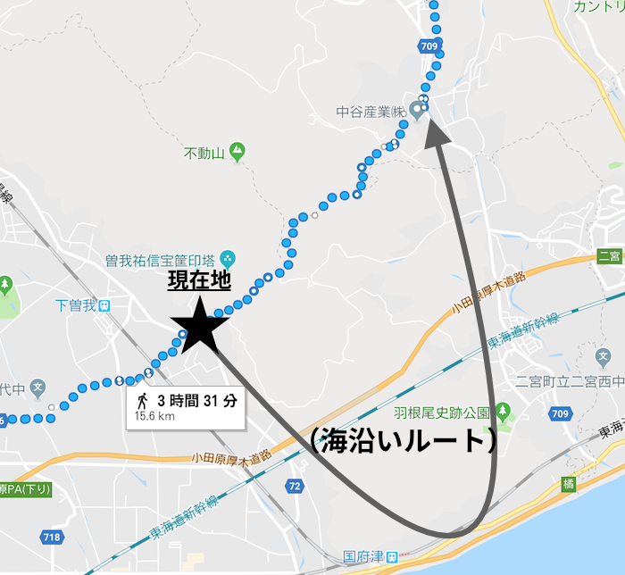3.2 山越えルート①（小田原市内）
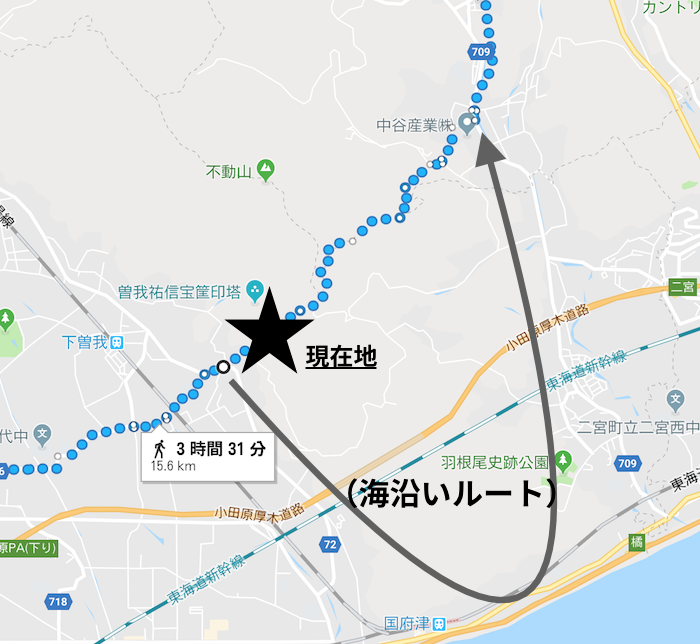原動機を頼りに急峻な舗装路を駆け上がることわずか1分。突然周りの景色が一変した。
この先に一体何が待ち受けているのか。早速不安が立ち込める。
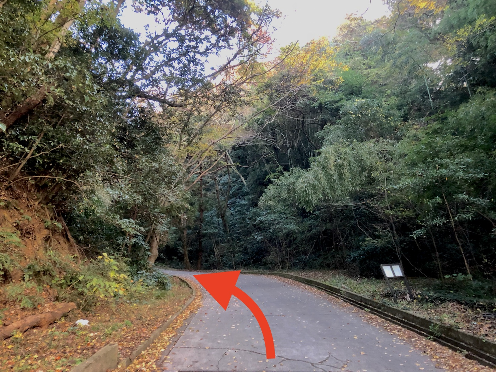3.3 山越えルート②（小田原市内）
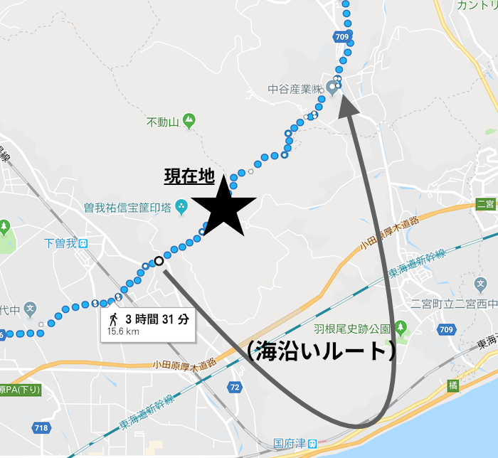と、その不安は杞憂であった。確かに、傾斜のきつい坂路であることは間違い無いのだが、原動機を味方にしている私にとっては何の苦でも無い。
そして、さらに3分ほど山を駆け上がると、視界が開けた尾根のような場所に出た。
後ろを振り返ると、そこには息を飲むような絶景が広がっていた。
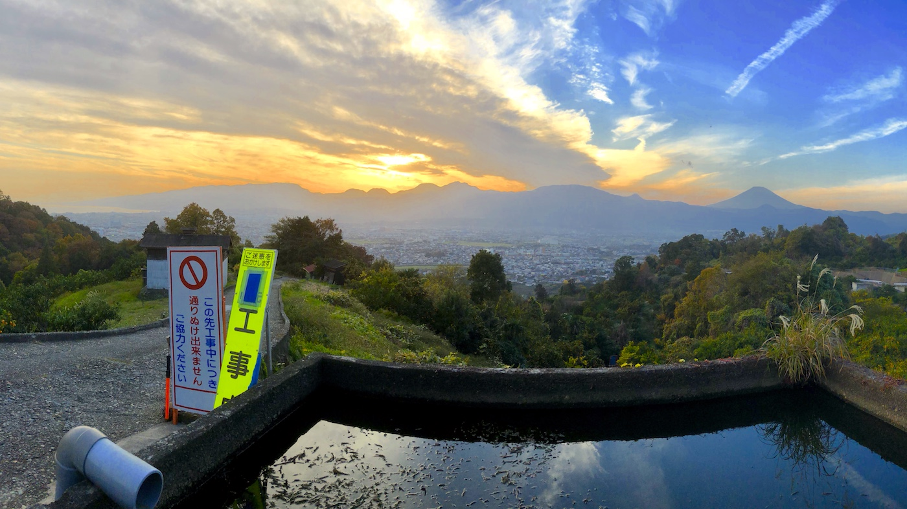左手に相模湾、右手に富士山、そして箱根の山並みを照らす夕陽。ここまで昇ったご褒美とでも言えようか。
ん、待てよ。夕陽が見える……だと。おいおい、日の入りが近いじゃねぇか。こんな山中で真っ暗になったら最悪だ。感傷に浸る暇はない。私はくるりと反転し、さらに前へと進む。
3.4 山越えルート③（小田原市内）
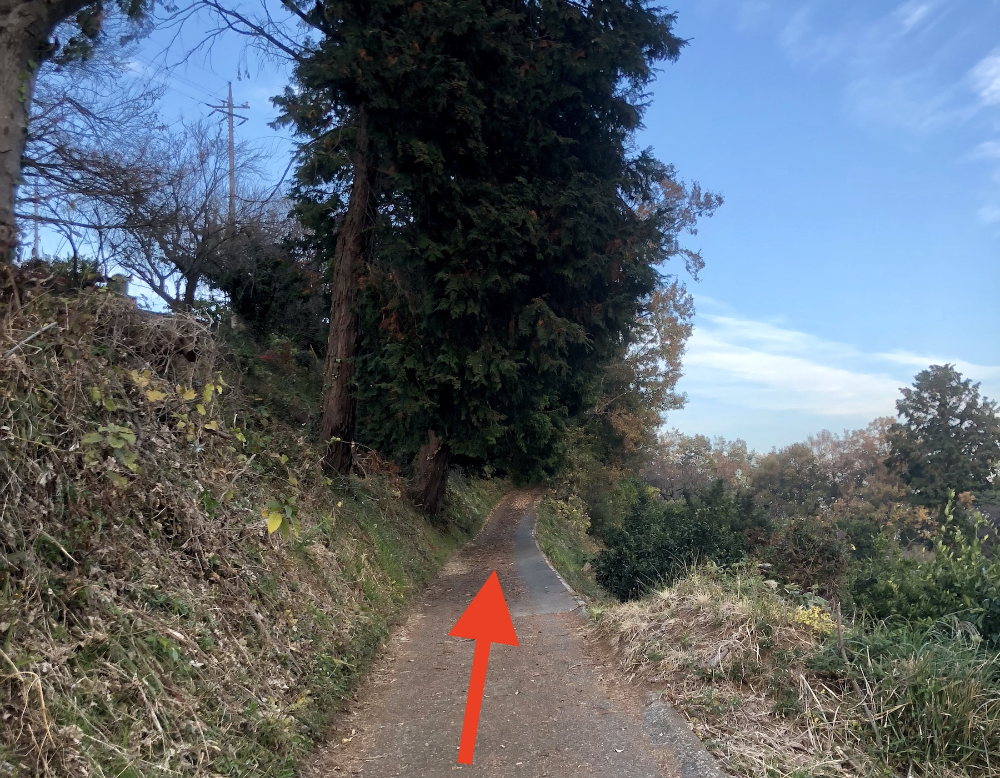ついに来たな、隘路……。
実は、これまでの道はストリートビューで確認できていたため、自宅からでも「きっと行けるんだろうなあ」と予想は出来ていた。
しかし、この先はストリートビューの車が通っておらず、どのような道になっているのか全く見当がついていない。私が事後調査に来た理由はここにあるのだ。
たしかにこの先の道は細く、一度車が入ったら戻ってこれなそうである。ただ、私はしまりんスタイル。舗装路であれば問題ない。あのグーグルを持ってしても入れなかった禁断の「不可侵領域」に、いざ突入する。
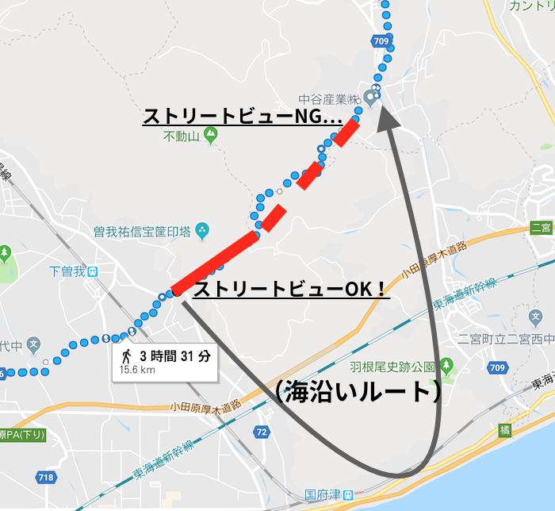3.5 山越えルート④（小田原市、中井町境付近）
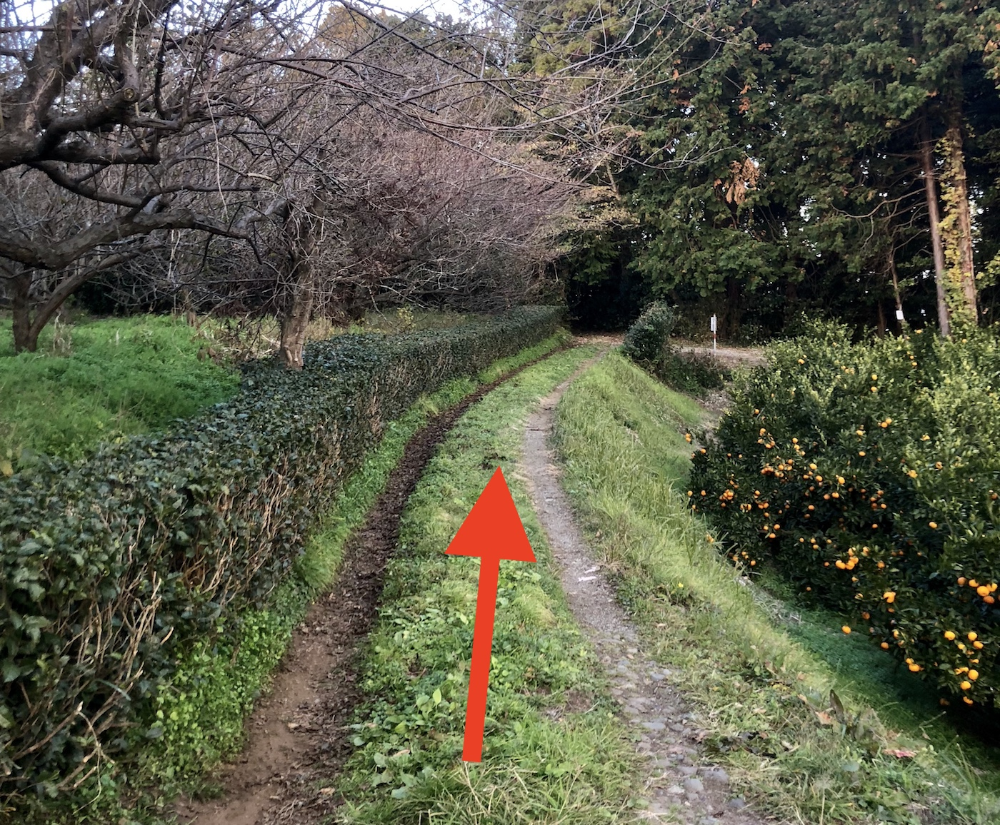お、おい……。
舗装路なら余裕、と思っていたのもつかの間。道は突然ダートに変貌した。しまりんスタイルの私は、左右どちらかのわだちを選択しながら進まなければならない。幸いにも、これくらいの隘路であればなんとか走行可能だ。
「止まるんじゃねぇぞ…」そう言いながら、スロットルを回す。
ちなみに場所はこのあたり、「不可侵領域」は、まだまだ始まったばかりだ。
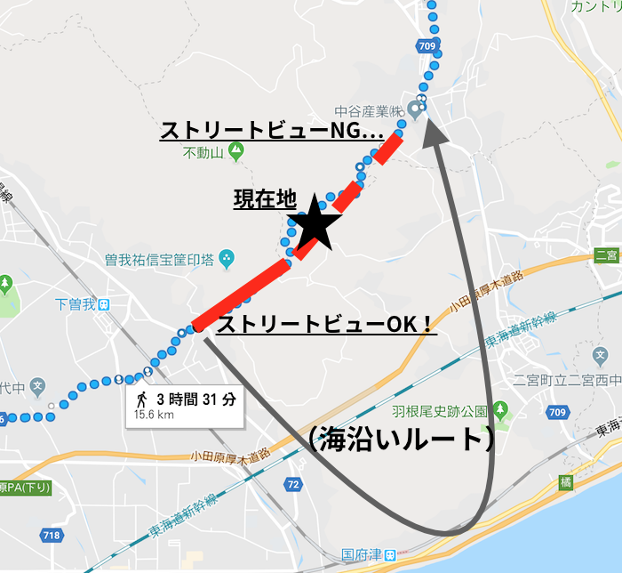3.6 山越えルート⑤（小田原市、中井町境付近）
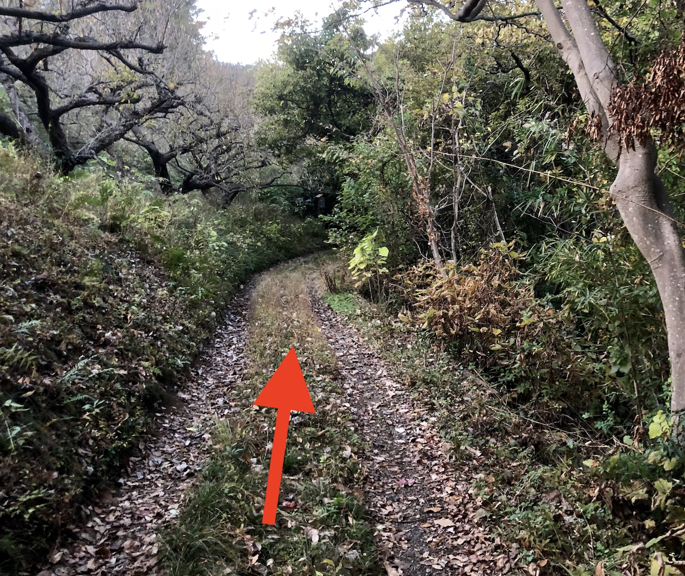やべぇよ…やべぇよ…
さらに道は荒れ果て、ついに山と一体化してきた。しまりんスタイルで突き進んでいた私であったが、そのスタイルのせいもあり、ついに「転回」が不可能となった（転回できる幅員ではないし、そのような場所も見当たらない。当然「バック」なんて芸当は出来るわけがない）。
私が取るべき行動は唯一つ。
「止まるんじゃねぇぞ…」なのだ（止まってたら日が暮れてしまう）。
3.7 山越えルート⑥（小田原市、中井町境付近）
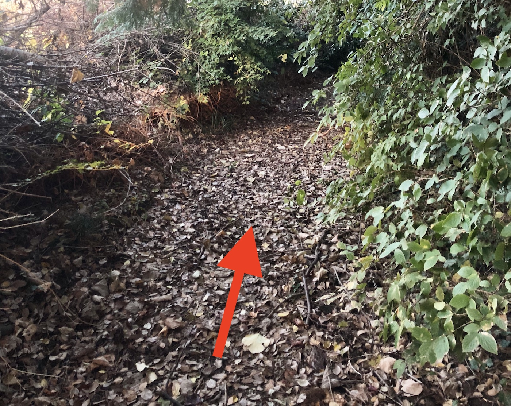もう俺の負けでいいよ……。
幅員は1.5m程度。当然車は通れない。いや、しまりんスタイルでもさすがにこれは限界ギリギリだ。地面に転がる大小の石にハンドルを取られながら、徒歩と同程度の最警戒速度で進んでいく。だって戻れないんだもん……。
3.8 山越えルート⑦（小田原市、中井町境付近）
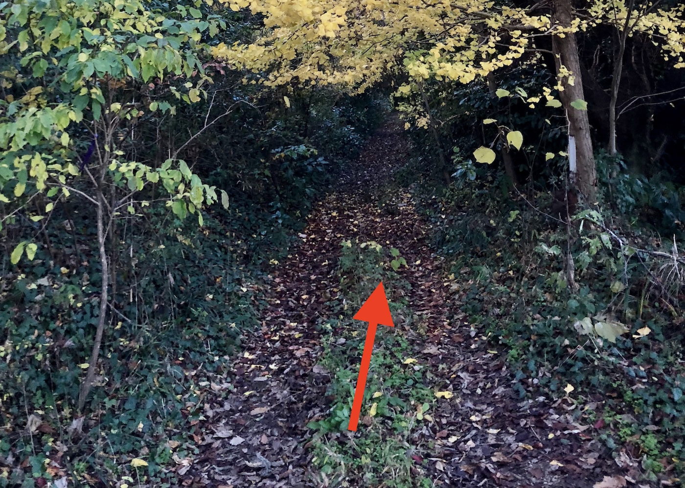このあたりから道（と呼べるのか怪しいが）の様子が変わって来た。尾根伝いから逸れ、下り勾配へと差し掛かった。
しまりんスタイルにとって、「下り」は怖い。
並みの傾斜であれば、構造上エンジンブレーキがかかり減速するので暴走することはない。だが、並みの傾斜でない場合……
100kgの鉄塊が暴走する。
不幸なことに、この傾斜は並では無かった。
少しでもブレーキから手を離せば鉄塊は加速する。正直、下り勾配ではこの鉄塊はお荷物なのだ。私は、まるで我が子を抱くかのようにこの長い長い下り坂を誰も後ろに乗せることなくブレーキいっぱい握りしめ、ゆっくり、ゆっくり下っていった。
3.9 山越えルート⑧（小田原市、中井町境付近）
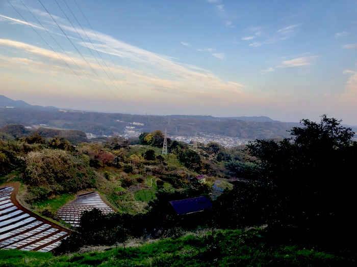3分ほど下っただろうか。視界が徐々に広がり始め、左手には再び絶景が広がっていた。本来は喜んで写真を撮るのかもしれないが、私は「絶景が見えること」がショックでしかなかった。
まだこんな高いところにいるのか……
私の懸念事項は「日が暮れるまでに下界に降りられるかどうか」なのだ。最悪、鉄塊を放置すればここから棚田沿いに下山することは可能だろう。だが、今はお荷物のコイツも下界では手放せない存在なのだ。放置なんて絶対に出来ない。
私は、この先に最悪の事態（行き止まり）が待ち受けていないことを祈りながら、荒れ果てた酷道を無我夢中で下っていく。
3.10 山越えルート⑨（小田原市、中井町境付近）
さらに進むと少し開けた場所に出た。これで帰れる…！ 否、そんなわけはなかった。
グーグルマップが指示している山越えルートが……
ない……のである……。
「おいおいマジかよ…」私は嫌な汗が噴き出す。厳密に言うと何もないわけではないのだが、それはまるで崖のような激ヤバ傾斜の獣道くらいなのだ。
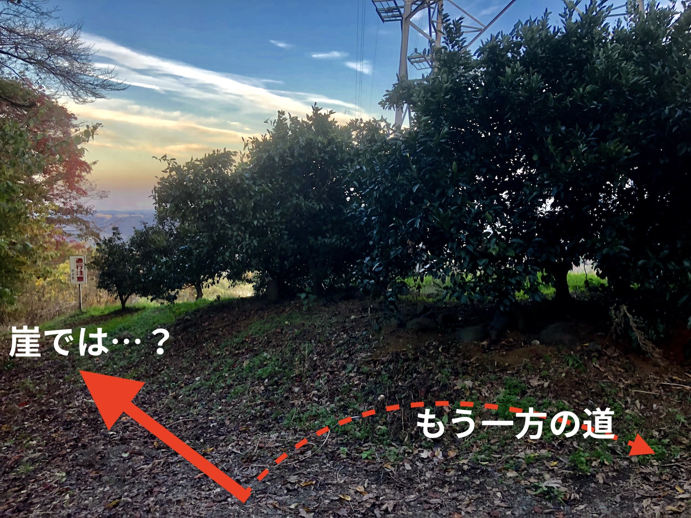 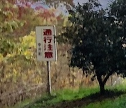通行注意じゃねぇよ、通れねぇよ。
そんなクレームを送りつけたくなるものだが、そんなことをしている暇はない。とにかく「時間」がないのだ。
不幸中の幸いであろうか、その開けた空間にはもう1本の道（こっちはまだマシ）がある。今の私はそこを通る以外の選択肢はない。グーグルマップの山越えルート検証は断念することとなるが、私はまだ死にたくない。
赤実線ルート（山越えルート）を捨て、希望の赤破線ルートを下る。
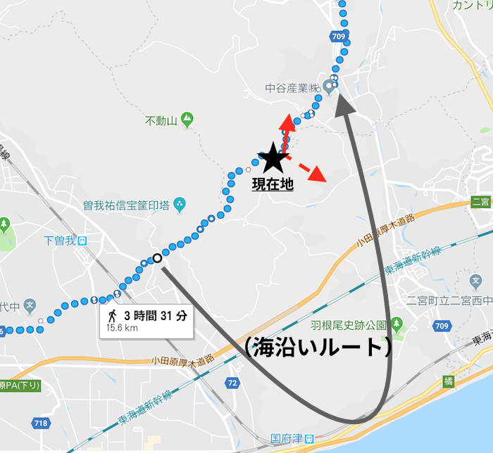3.11 山越え断念ルート（中井町内）
………………
………………
………………
………………
………………
それから、どれくらいの時間が経ったのだろうか。
私は必死で山を下った。
もうグーグルマップはあてに出来ない。
自分の直感を頼りに、とにかく降りて、降りて、降り続けた。
そして………………
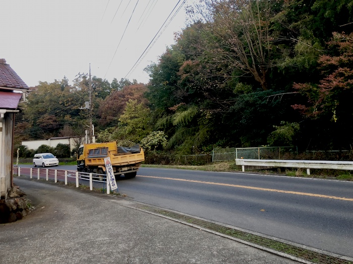 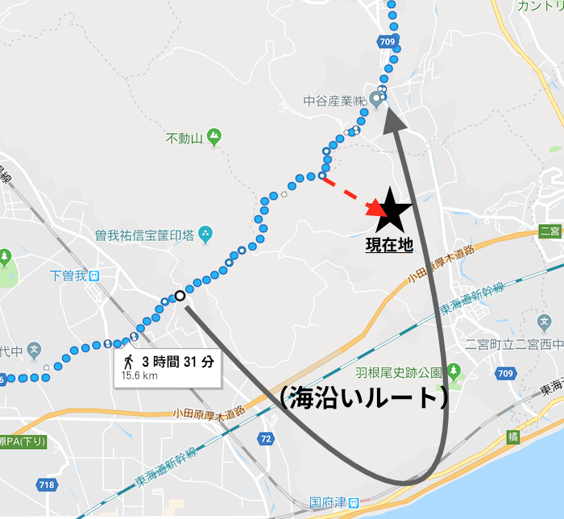車だ……車がいるぞ……！！
1時間ぶりに聞いた車のエンジン音は、まるで胎内に木霊する母親の心音のごとく優しい音色を奏でていた。
こうして、私はバイクを乗り捨てたり、山中で遭難したりすることなく無事に帰還し、こうしてキーボードを叩くことができている。その幸せを噛み締めながらー。
おしまい
4. 結論
Q. 山越えルートは行けたのか？
A. 少なくともバイクでは完走できませんでした。徒歩であればおそらくいけると思いますが、そもそも前半の山登りが辛いと思います。グーグルマップの徒歩ルートは鬼畜すぎます。
Q. そもそも彼はどうすべきだったのか？
A. 小田原駅時点で「海沿いルート」を進む判断が出来ていれば、以下のルートで「秦野駅」を目指すことが出来ました。距離は19.1km、所要時間は4時間なので、順調に歩ければ5時ごろに秦野駅に到着し、始発を捕まえられていた可能性があります。もし捕まえられればその電車は町田駅5時39分着なので、6時ごろに帰宅出来たかもしれません。
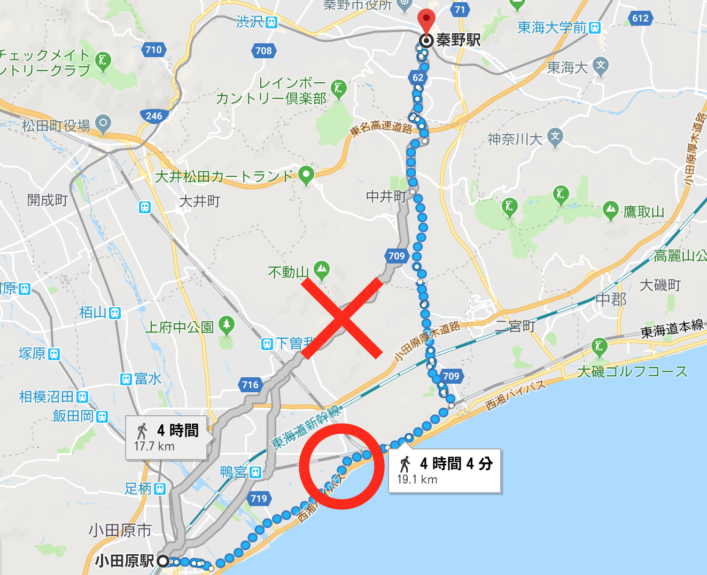机上の空論ではあるものの、金銭と時間と体力を考慮すれば、そのあたりが最適解でしょう。また寝過ごしてしまった際には、ぜひご参考に……。
アドカレ、明日は誰かしらね？